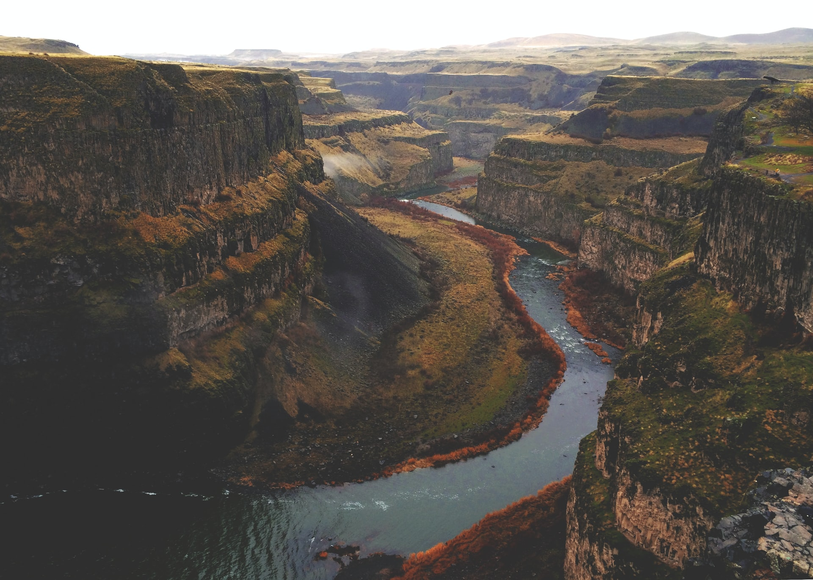
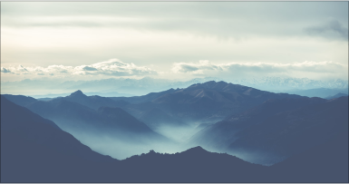

Kembali

Sudah punya destinasi untuk liburan akhir pekan? Jika belum, coba ajak keluarga Anda berlibur ke
Curug Cigangsa. Curug Cigangsa atau Curug Luhur merupakan salah satu dari sekian banyak destinasi
wisata yang ada di Kawasan Geopark Ciletuh, Kabupaten Sukabumi. Air terjun tiga tingkat dengan
pemandangan hijau persawahan dan pepohonan rindang.
Curug Cigangsa terbentuk akibat gempa yang kemudian membentuk dinding batu hitam yang indah. Fakta unik Curug Cigangsa adalah penamaan objek wisata yang konon diambil dari nama seorang tokoh masyarakat Eyang Gangsa. Tempat wisata ini bisa dikatakan aman karena debit airnya yang tidak terlalu kecil dan air terjun yang tidak terlalu tinggi.
Pemandangan yang memanjakan mata Wisatawan akan disuguhkan pemandangan yang menyegarkan mata bahkan sebelum tiba di Curug Cigangsa. Sepanjang perjalanan menuju Curug Cigangsa, wisatawan bisa menikmati pemandangan persawahan yang dipadukan dengan udara segar dari pepohonan yang rindang.
Curug Cigangsa dimanfaatkan masyarakat untuk pengairan sawah sehingga tidak heran jika wisatawan bisa melihat hamparan persawahan dari atas air terjun. Jumlah pengunjung yang masih tergolong sedikit membuat suasana menjadi lebih tenang sehingga wisatawan yang berkunjung tidak hanya memanjakan mata tetapi sekaligus dapat bermeditasi untuk menjernihkan pikiran.
Batu Masigit dan Leuwi Masigit. Adanya batu besar yang menyerupai “Masigit” atau masjid menambah keunikan Curug Cigangsa. Batu Masigit merupakan situs sejarah yang terletak di tingkat ketiga air terjun. Genangan air yang terletak di depan Batu Masigit ini kemudian dikenal dengan nama Leuwi Masigit.
Atraksi Instagramable Liburan tidak lengkap tanpa dokumentasi. Tebing hitam megah yang tersapu air terjun menjadi spot foto terbaik bagi wisatawan untuk mengabadikan momen tersebut. Foto dengan background Curug Cigangsa menjadi spot foto yang paling banyak ditemui di media sosial Instagram. Buat kamu yang suka mengabadikan momen, jangan lupa abadikan momen bersama orang-orang spesial di Curug Cigangsa ya?
Akses dan Fasilitas Untuk sampai di destinasi wisata Curug Cigangsa, wisatawan harus menempuh perjalanan sejauh 110 KM dari pusat Kota Sukabumi untuk sampai di Desa Batusuhan. Dari lokasi tempat kendaraan diparkir, wisatawan masih perlu menempuh perjalanan sekitar 10-20 menit dengan berjalan kaki. Namun, tak perlu khawatir karena rasa lelah akibat perjalanan jauh akan terbayar begitu wisatawan tiba di Curug Cigangsa.
Curug Cigangsa, Warisan Alam yang Memanjakan Wisatawan
Oleh Faizal Abdul Hakim - 1 Desember 2022
Curug Cigangsa terbentuk akibat gempa yang kemudian membentuk dinding batu hitam yang indah. Fakta unik Curug Cigangsa adalah penamaan objek wisata yang konon diambil dari nama seorang tokoh masyarakat Eyang Gangsa. Tempat wisata ini bisa dikatakan aman karena debit airnya yang tidak terlalu kecil dan air terjun yang tidak terlalu tinggi.
Pemandangan yang memanjakan mata Wisatawan akan disuguhkan pemandangan yang menyegarkan mata bahkan sebelum tiba di Curug Cigangsa. Sepanjang perjalanan menuju Curug Cigangsa, wisatawan bisa menikmati pemandangan persawahan yang dipadukan dengan udara segar dari pepohonan yang rindang.
Curug Cigangsa dimanfaatkan masyarakat untuk pengairan sawah sehingga tidak heran jika wisatawan bisa melihat hamparan persawahan dari atas air terjun. Jumlah pengunjung yang masih tergolong sedikit membuat suasana menjadi lebih tenang sehingga wisatawan yang berkunjung tidak hanya memanjakan mata tetapi sekaligus dapat bermeditasi untuk menjernihkan pikiran.
Batu Masigit dan Leuwi Masigit. Adanya batu besar yang menyerupai “Masigit” atau masjid menambah keunikan Curug Cigangsa. Batu Masigit merupakan situs sejarah yang terletak di tingkat ketiga air terjun. Genangan air yang terletak di depan Batu Masigit ini kemudian dikenal dengan nama Leuwi Masigit.
Atraksi Instagramable Liburan tidak lengkap tanpa dokumentasi. Tebing hitam megah yang tersapu air terjun menjadi spot foto terbaik bagi wisatawan untuk mengabadikan momen tersebut. Foto dengan background Curug Cigangsa menjadi spot foto yang paling banyak ditemui di media sosial Instagram. Buat kamu yang suka mengabadikan momen, jangan lupa abadikan momen bersama orang-orang spesial di Curug Cigangsa ya?
Akses dan Fasilitas Untuk sampai di destinasi wisata Curug Cigangsa, wisatawan harus menempuh perjalanan sejauh 110 KM dari pusat Kota Sukabumi untuk sampai di Desa Batusuhan. Dari lokasi tempat kendaraan diparkir, wisatawan masih perlu menempuh perjalanan sekitar 10-20 menit dengan berjalan kaki. Namun, tak perlu khawatir karena rasa lelah akibat perjalanan jauh akan terbayar begitu wisatawan tiba di Curug Cigangsa.
Kategori
-
2Curug
-
10Pantai
-
5Geyser
Artikel Lain

31 November 2022
Curug Sodong menyimpan berbagai sejarah
Meski Pantai Ujung Genteng berada pada garis pantai laut selatan...
Lihat Detail

31 November 2022
Jangan Lewatkan Lomba Tari Tradisional Di Ciletuh
Slate helps you see how many more days you...
Lihat Detail